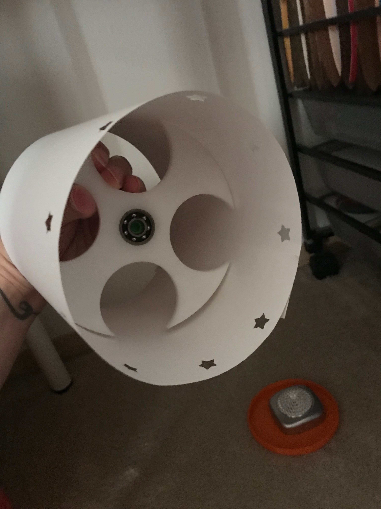
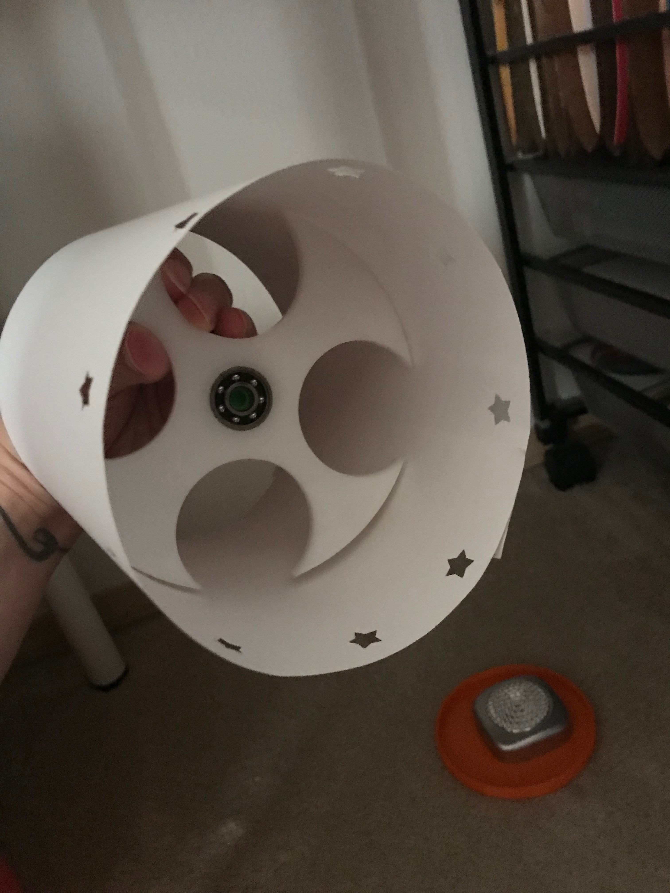

Assignment 7: Final Project Proposal
Light Projected Zoetrope
The concept
In the lamp project and the moving parts project I came across things I wanted to explore further. In particular, reflected light and spinning motion.

While working on the moving parts project I had thought about making a zoetrope (device that produces the illusion of motion by displaying a sequence of drawings or photographs showing progressive phases of that motion).
Zoetropes use a similar technology to a flip book, but they possess a circular shape and a strobe light that shines on each image as it rapidly passes by.
"The images in the animation strip appear to move when you spin the device because of persistence of vision. When you look at the image through the slit, your eye retains that image for a fraction of a second after you’ve moved on to the next image. Your brain merges this image with the next one. So, as you spin the Zoetrope, the images will appear to blend and give the appearance of movement. This is similar to how flip books, televisions, and even movies work."
-definition by Childrens Museum of Houston in Education
Additionally, the reflected light that was a by-product of my lantern actually became the most interesting part of my lamp. So as I was brainstorming I ended up with this idea to play with projected light and motion.
I started by putting my previous project parts together to see what effects I could produce. I made a quick and dirty prototype using my spinner and a shade with stars moving progressively up and down around the circumference.
 

Testing the concept
I tested to see if this would even be interesting using several light sources and levels.
Use case
This is an entertaining and explorative device that will be used in a mostly dark room to primarily delight and learn more about animation and the mathematical relationship with an object and light shined through that object.
My feeling is that this will be the beginning of a journey of learning not the end.
Sketches

I'm still working out the exact shapes and sizes these things will be. My work process always involves some improv as I develop the concept.
Breakdown of tasks
I will use Illustrator to make a design that I will laser cut out of a sturdy yet flexible material (have some ideas but still undecided).
The base will modelled in a CAD program and 3D printed.
The light source will be either a bulb or a small flat seated light similar to the one I used in the lamp project.
The spinning mechanism will either be a ball bearing to manually spin the device or I may use a motorized spinning part. Time constraints will probably determine the answer to that.
Timeline
The next steps will be:
1. Create a design in Illustrator with a sequence of images.
2. Laser cut a test piece of the cutout design.
3. Research a material that would work well for that piece (cardstock, vellum, etc)
4. Think about how the laser cut part will fit into the base.
5. Design the base that holds the light source in a CAD program.
6. 3D print the base.
7. Assemble and test.
Contingencies
If I start running out of time I will simplify as much as possible to create a cool moving lighted effect on the wall without being too concerned about achieving an animated look.
I will also potentially make the base as simple and straightforward in design rather than a decorative element that I would like to achieve.
Using a ball bearing and a simple light without a cord are also part of my contingency plan but are likely going to be necessary.
Bill of materials
material for the laser cut design (cardstock, vellum, etc) - To be determined
Filament (buy right now)
Ball bearing or motor (buy right now)
Light source (already sourced)